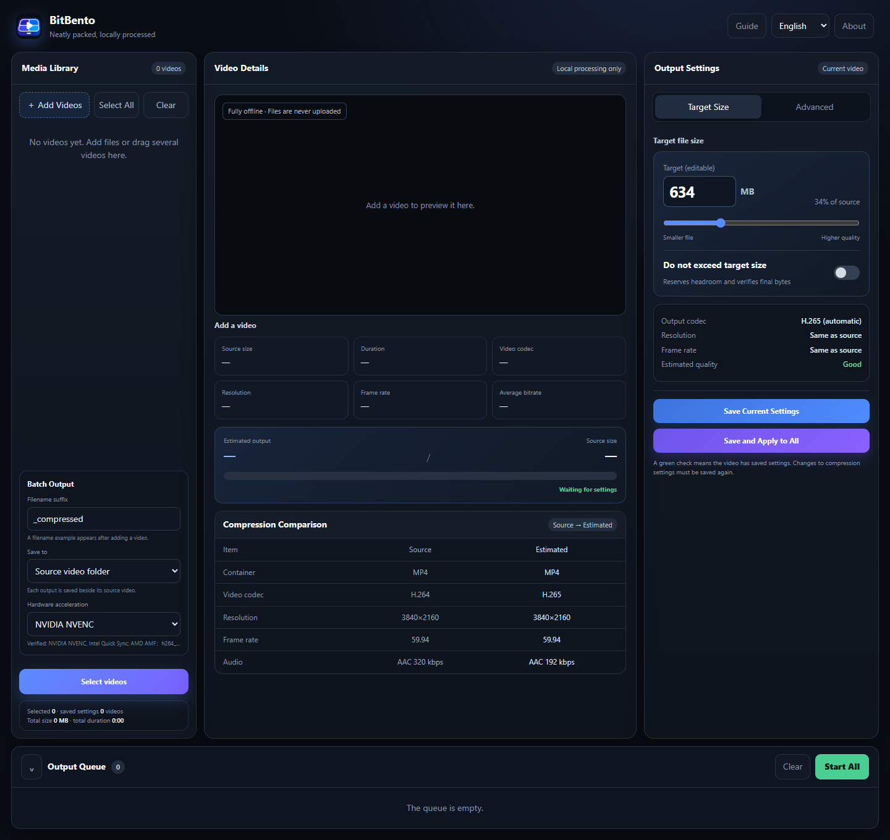

01 / PRIVACY
Network transfer 0 KB
Privacy stays local
Every step runs offline with no uploads and no cloud processing
Target size, advanced controls, batch queue and hardware acceleration Everything stays on your computer

BitBento brings complex encoding logic into one clear workspace You decide the result and BitBento handles the rest
Every step runs offline with no uploads and no cloud processing
Specify a target file size or fine-tune every encoding parameter
A familiar process with a different delivery speed
Hardware acceleration for NVIDIA, Intel, AMD and more
Media details, preview, output settings, batch queue and live progress all stay visible in one focused interface
From format inspection and complex paths to safe cancellation BitBento is designed for real video files and everyday workflows
Free, open source and built for Windows 11 x64
Installer supports English and Simplified Chinese · The current build is unsigned and Windows may show an unknown publisher warning